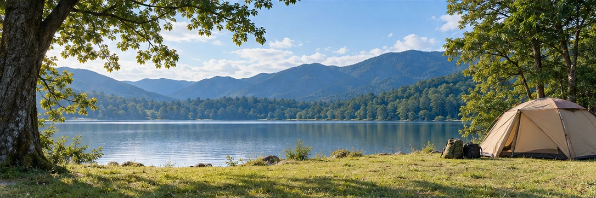

SOTOJITAKU CAMP / BEGINNER GUIDE
テントは、
人数だけで選ばない。
泊まる人数、荷物、移動手段、設営する人。使う場面から必要条件を決めます。
テントは価格差も種類も大きく、初心者が迷いやすい道具です。最初からブランドや形で決めるより、「何人で泊まるか」「車で運ぶか」「誰が設営するか」「春夏秋のどこで使うか」を先に決めると候補を減らせます。
01 定員と実際の使い方を分ける
メーカーの定員は重要な基準ですが、寝具や荷物を室内に置くと余裕は変わります。大人と子どもの組み合わせ、前室に荷物を置けるかなども含め、公式寸法を確認します。
SOTOJITAKUの商品提案では、少なくとも利用人数を下回る定員のテントを主推薦にしない考え方を採用しています。
02 重量と収納サイズは移動方法で評価する
車なら多少大きくても運べますが、徒歩や公共交通では数kgの差が大きな負担になります。収納時の長さも、車の荷室や自宅の収納に入るかを確認します。
「広いほど快適」でも、運べない・設営できないテントは初回には向きません。
03 設営のしやすさと天候対応を見る
自立式か、必要なポールやペグは何本か、説明書や設営動画があるかを確認します。防水性能は数値だけでなく、フライシートの構造や換気も含めてメーカー情報を確認してください。強風や荒天時はテント性能に頼って続行せず、延期・中止を選択肢にします。
初回は明るいうちに到着し、設営時間を十分に取る計画がおすすめです。
出発前のチェック
- 利用人数以上の定員
- 使用時の室内寸法
- 本体重量
- 収納サイズ
- 設営方法・必要人数
- 対応する季節・環境
- 付属品と別途必要なもの
- 自宅での保管場所
迷うなら一度借りるテントは高額で保管も必要です。初回はレンタルでサイズ感と設営を体験し、今後も続けたいと思ってから購入する方法もあります。
次に読む
MAKE YOUR CAMP
条件を選ぶと、必要なものが変わります。
7つの質問から、持ち物・買う/借りる・ごはん・予算・1日の流れまで、あなたのキャンプとして組み立てます。
SOTOJITAKU CAMPでつくる →